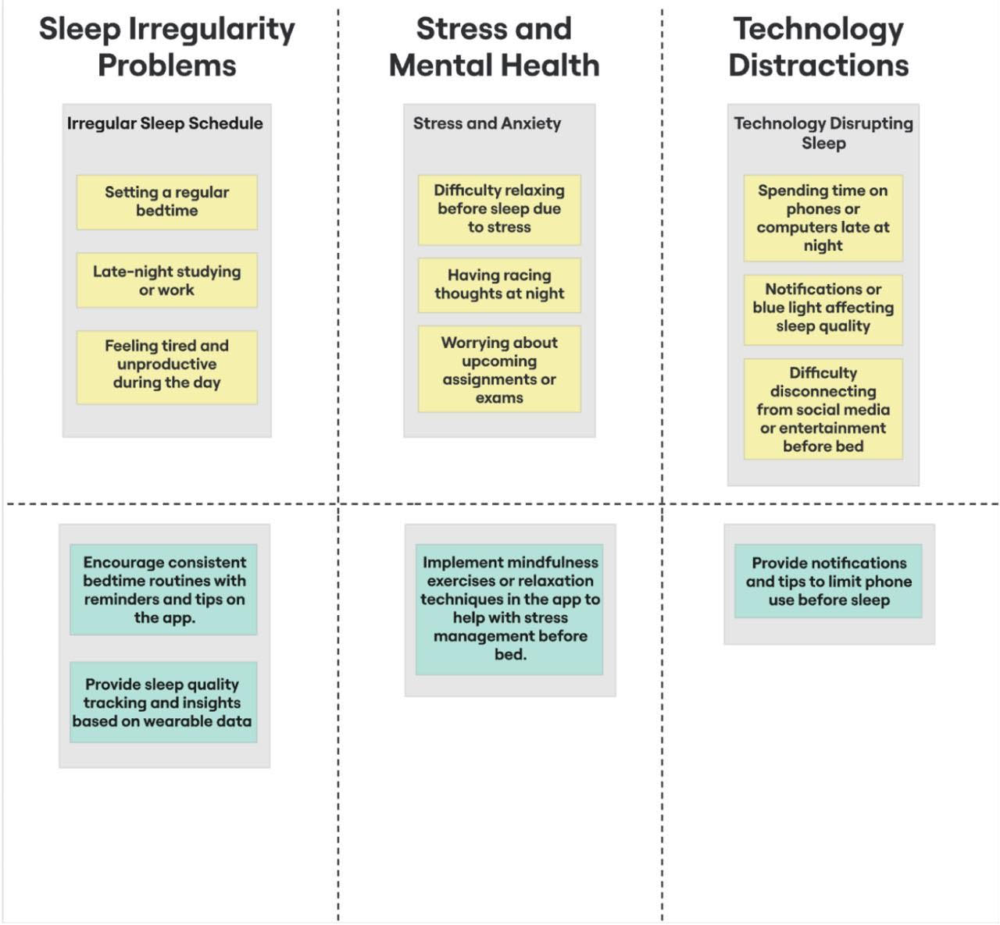
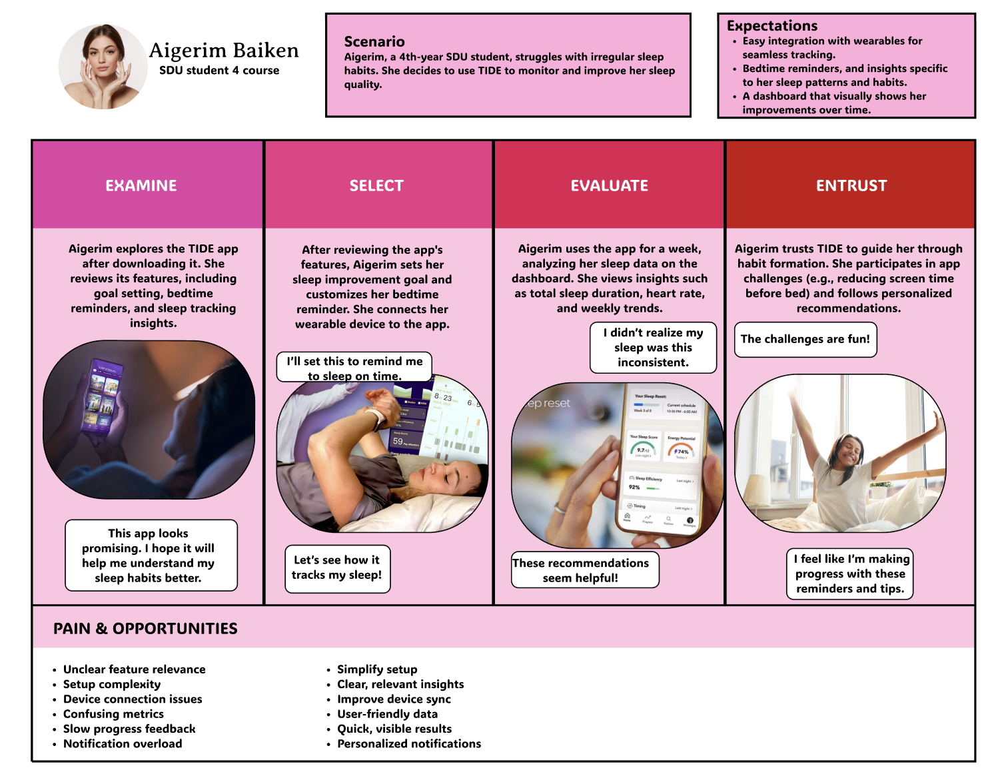
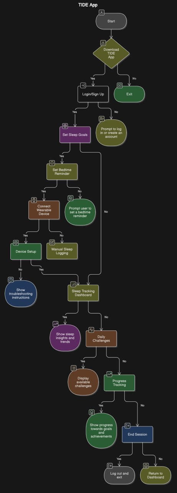

The goal of this project is to create or improve a sleep tracking app that will help students improve their sleep habits using data from wearable devices. By focusing on sleep tracking, understanding students' mental sleep patterns, and applying behavioral change techniques, the app will help students develop more effective sleep routines.
The goal of this project is to help students improve their sleep with a sleep tracking app that works with smartwatches. The app will contain useful tips and reminders to help students sleep better.To understand the needs of the students, we talked to them (with 5 students) about their sleep problems and what they want to see in the sleep app. Based on this, we will develop a solution suitable for their lives.
1. Data collection
Interview FIndings
Sleep Habits:
Most of the students said that their sleep schedule changes frequently. Sometimes they sleep for 7 hours, and sometimes only 3-4 hours.
Using your phone late at night, especially on social media, is a common problem.
Awareness of Sleep Trackers:
Some students are aware of sleep apps like Sleep Cycle, Meditopia, but only a few of them have used them.
Those who tried them abandoned them because the apps didn't help much or they didn't feel motivated.
What Students Want:
The app shows how long and at what time they will sleep. It should also remind them to go to bed on time and give them advice on how to get a better night's sleep.
Students want the app to help them understand why they don't sleep well and offer solutions. Some also want fun features like rewards for a good night's sleep.
Concerns:
Some worry that the app may display inaccurate sleep data.
Others are concerned about privacy and how their data will be used.
They also want the app to show real results, otherwise they won't keep using it.
Preferred Device:
Most students prefer a smartwatch because it’s easy to wear and use.
Behaviour change

Irregular sleep patterns:
Staying late at school or social events, you lose concentration and energy.
Stress and Anxiety:
Worries about life or studies make it hard to relax and sleep.
Phone Use:
Late-night screen time delays sleep and lowers quality.
Time Management Issues:
Poor planning leaves less time for proper rest.
2. Data Analysis


User Onboarding:
Login/Sign Up: Users either log in to an existing account or create a new one.
Set Sleep Goals: Users input their desired bedtime and wake-up time.
Sleep Tracking:
Manual Sleep Tracking: Users can manually log their sleep duration and quality.
Automatic Sleep Tracking: The app automatically tracks sleep using the device's sensors.
Data Analysis and Insights:
Sleep Tracking Dashboard: Users can view their sleep data, including sleep duration, sleep stages, and sleep quality.
Daily Challenges: Users can participate in daily challenges to improve their sleep habits.
Additional Features:
Device Settings: Users can customize the app's settings to personalize their experience.
End Session: Users can end their session and log out of the app
After evaluating similar applications, we made adjustments based on student preferences. For example, competing apps didn't have distractions like social media, which led to the addition of an app lock feature. This helps to avoid distractions during sleep. Users can set time limits for blocking applications, which helps them avoid the temptation to communicate on social networks.
We also found that students wanted clear and actionable sleep improvement tips based on their habits, which led to the introduction of more meaningful AI-based feedback.
The inclusion of push notifications for sleep reminders and easy-to-read schedules was also based on feedback that students prefer to interact in real time rather than just monitor the situation without useful information.